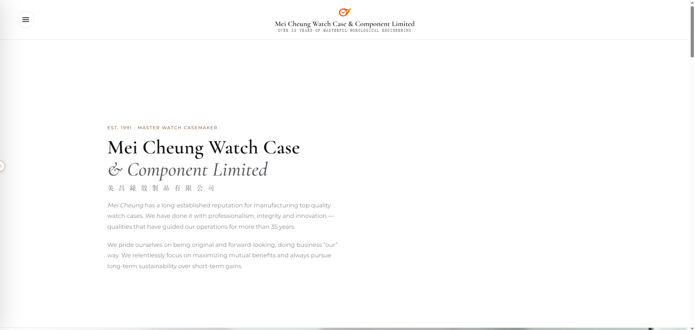

This freelance engagement renewed the public website of Mei Cheung Watch Case & Component Limited (美昌錶殼製品有限公司), a Hong Kong manufacturer of precision watch cases established in 1991. The work replaced an aging corporate presence with a site that presents more than three decades of case-making — heritage, finishing, metrology, and factory capability — in a form suited to luxury-brand clients.
The renewal is a hand-built, multi-page site: Home, About Us, Products & Service, Tour, and Contact Us. The homepage opens with the company name in English and Chinese, then walks through who they are, their pillars of quality and service, surface finishing, measurement systems, and practical automation on the factory floor. Type, photography, and a numbered navigation drawer were laid out so the same pages stay readable on a desktop and on a phone.
